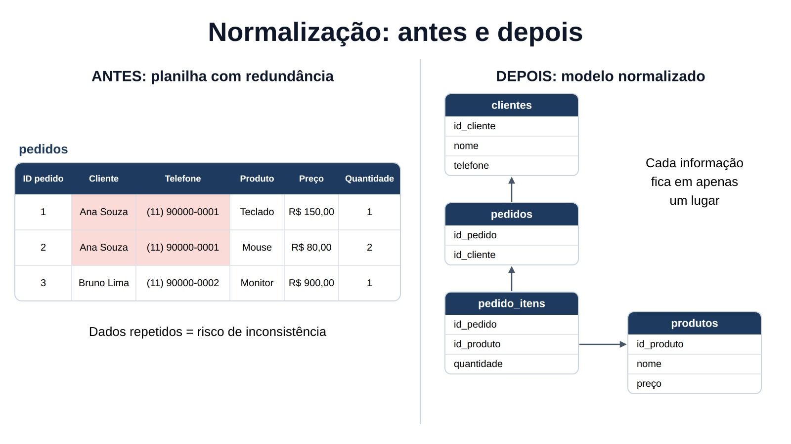

Samuel Vitor
Sistemas de Informação, 2º semestre. Área de interesse: banco de dados
Modelagem de Banco de Dados
Como separar clientes, produtos e pedidos para evitar dados repetidos, erros de atualização e informações perdidas.
Sistemas de Informação, 2º semestre. Área de interesse: banco de dados
Sistemas de Informação, 2º semestre. Área de interesse: desenvolvimento web.
[Curso], [semestre]. Área de interesse: [área].
Publicado em: 19 de outubro de 2026 · Última revisão: 19 de outubro de 2026
Vamos começar com uma situação comum: uma pequena loja controla os pedidos em uma planilha. Quando um cliente muda de telefone, a pessoa responsável precisa corrigir esse telefone em todas as linhas em que ele aparece. Se esquecer uma, o banco fica com informações diferentes para a mesma pessoa.
Neste artigo, vamos mostrar como transformar essa planilha em tabelas relacionadas usando a 1FN, a 2FN e a 3FN. Ao final, você vai entender o que é dependência funcional, chave primária, chave estrangeira e anomalia de dados.
Veja a tabela inicial da loja. Ela mistura informações de pedidos, clientes e produtos:
| ID pedido | Cliente | Telefone | Produto | Preço | Quantidade |
|---|---|---|---|---|---|
| 1 | Ana Souza | (11) 90000-0001 | Teclado | 150,00 | 1 |
| 2 | Ana Souza | (11) 90000-0001 | Mouse | 80,00 | 2 |
| 3 | Bruno Lima | (11) 90000-0002 | Monitor | 900,00 | 1 |

Essa estrutura causa três anomalias:
Na Primeira Forma Normal, cada coluna deve guardar apenas um valor por linha. Não podemos colocar “Teclado, Mouse” em uma única célula nem criar colunas como produto1, produto2 e produto3.
No nosso exemplo, cada linha já representa um item de pedido, então a tabela está próxima da 1FN. Ainda assim, falta uma chave clara para cada item: a combinação de ID pedido e Produto pode identificar a linha.
A Segunda Forma Normal exige que a tabela esteja na 1FN e que nenhum atributo dependa apenas de parte de uma chave primária composta.
Se a chave for composta por id_pedido e id_produto, o nome e o preço do produto dependem somente do produto, não do pedido. Por isso, eles devem sair da tabela de itens.
-- SGBD usado: PostgreSQL 16
-- O nome e o preço pertencem ao produto,
-- e não ao par pedido + produto.
CREATE TABLE produtos (
id_produto SERIAL PRIMARY KEY,
nome VARCHAR(100) NOT NULL,
preco NUMERIC(10,2) NOT NULL
);O script completo, com criação e inserção de dados, está em sql/normalizacao.sql.
A Terceira Forma Normal exige que a tabela esteja na 2FN e que nenhum atributo não-chave dependa de outro atributo não-chave.
Na planilha original, o telefone depende do cliente, e não do pedido. Portanto, vamos separar os clientes em outra tabela:
-- O telefone depende do cliente,
-- e não do pedido.
CREATE TABLE clientes (
id_cliente SERIAL PRIMARY KEY,
nome VARCHAR(100) NOT NULL,
telefone VARCHAR(20)
);
CREATE TABLE pedidos (
id_pedido SERIAL PRIMARY KEY,
id_cliente INT NOT NULL,
CONSTRAINT fk_pedido_cliente
FOREIGN KEY (id_cliente)
REFERENCES clientes(id_cliente)
);Com a normalização, ficamos com quatro tabelas: clientes, pedidos, produtos e pedido_itens. A tabela pedido_itens liga um pedido a um produto e guarda a quantidade comprada.
CREATE TABLE pedido_itens (
id_pedido INT NOT NULL,
id_produto INT NOT NULL,
quantidade INT NOT NULL CHECK (quantidade > 0),
PRIMARY KEY (id_pedido, id_produto),
CONSTRAINT fk_item_pedido
FOREIGN KEY (id_pedido) REFERENCES pedidos(id_pedido),
CONSTRAINT fk_item_produto
FOREIGN KEY (id_produto) REFERENCES produtos(id_produto)
);Esta consulta mostra o pedido completo sem repetir o telefone do cliente em cada item:
SELECT p.id_pedido,
c.nome AS cliente,
pr.nome AS produto,
pi.quantidade,
pr.preco
FROM pedidos p
JOIN clientes c ON c.id_cliente = p.id_cliente
JOIN pedido_itens pi ON pi.id_pedido = p.id_pedido
JOIN produtos pr ON pr.id_produto = pi.id_produto
ORDER BY p.id_pedido;Se a Ana mudar de telefone, atualizamos apenas uma linha:
UPDATE clientes
SET telefone = '(11) 90000-0009'
WHERE id_cliente = 1;Por isso, não defendemos que todo banco deva ser normalizado até a 3FN sem análise. Em sistemas transacionais, a normalização costuma ajudar na consistência; em relatórios, pode ser interessante avaliar desnormalização controlada.
As imagens utilizadas são ilustrações próprias do grupo ou imagens de uso livre, com licença registrada no README do repositório. Todos os dados usados nos exemplos e scripts SQL são fictícios.